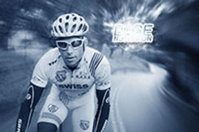

Before
After
- 

With digital cameras on the rise and even cell phones getting better with their resolution and pixels, the art of photography is right in the palm of your hands. All you need is a good camera, printer, ink, and photo paper and you can take and print photos all in the same day, no waiting for a week, a day, or even an hour, for your photos all can be done right in your own home. I have an older style “Nikon D50 6.1 MP” paired with an older model printer “HP Photosmart 8750” I take and print very nice photos, and with the software “Adobe Photoshop CS6” I can change the appearance of any photo I take. It takes some time to edit photos but its worth it to make them look different than anyone else, and it all depends on what you want to do with your photos you can end up spending a lot of money on the right things you need to become an editor of photos.
Before
After